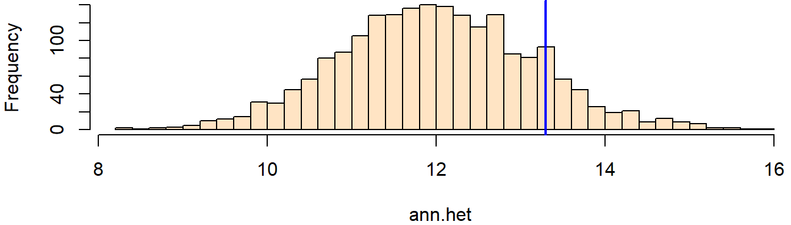

# Load packages
library(sf)
library(spatstat)
library(terra)
# Read state polygon data
s <- st_read("MA.shp")
w <- as.owin(s)
w.km <- rescale.owin(w, 1000)
# Read Walmart point data
s <- st_read("Walmarts.shp")
p <- as.ppp(s)
marks(p) <- NULL
p.km <- rescale.ppp(p, 1000)
Window(p.km) <- w.km
# Read population raster
img <- rast("log_pop_sqmile.tif")
df <- as.data.frame(img, xy = TRUE)
rast <- as.im(df)
rast.km <- rescale.im(rast, 1000)ANN Hypothesis Testing: Inhomogeneous Case
Data for this tutorial can be downloaded from here. Don’t forget to unzip the files to a dedicated folder on your computer.
Don’t forget to set the R session to the project folder via Session >> Set Working Directory >> Choose Directory.
Load and prep the dataset
In the following chunk of code, we will load the shapefiles into R, then we will convert the spatial objects into formats that are readable by the spatstat functions. We will also convert the mapping units from meters to kilometers using the rescale function.
Our earlier PPM analysis suggested that the population density distribution (expressed on a log scale), could help explain the observed distribution of Walmart stores. We therefore need to account for this inhomogeneity in the underlying 1st order effect before tackling a distance based analysis which addresses the 2nd order effect of the underlying process. In other words, we want to make sure that any clustering or dispersion observed in our data is not a result of a varying population distribution.
Average nearest neighbor analysis
First, we’ll compute the observed Walmart ANN statistic.
ann.p <- mean(nndist(p.km, k=1))
ann.p[1] 13.29478The observed average nearest neighbor is 13.29 km.
Is our observed ANN value consistent with a random process when controlled for population distribution (inhomogeneous process)?
In our earlier analysis of the point pattern, we calculated a (pseudo) p-value of around 0.33. The problem with our initial ANN analysis is that we did not account for 1st order effects of the underlying process such as population distribution (a possible covariate). In other words, is the distance observed between Walmart stores a reflection of the attractive/repulsive forces at play when positioning the stores within the state of Massachusetts or is their proximity to one another dictated by some underlying process such as population density distribution?
If we are to assume that population distribution will influence the distribution of Walmart stores, we need to rerun the ANN analysis while controlling for population distribution influence. We do this by instructing the rpoint() function to increase point placement probability at locations with high covariate values (i.e. a high population density area is more likely to receive a random point than a low density area).
n <- 1999
ann.het <- vector()
for (i in 1:n){
rand.p <- rpoint(n = p.km$n, f = rast.km)
ann.het[i] <- mean(nndist(rand.p, k = 1))
}The above loop is almost identical to that of the homogeneous case except with the addition of the f = rast.km argument which defines the intensity of the underlying process (rast.km represents the population density raster). The rpoint function rescales the raster values to a range of [0,1] where 1 designates maximum probability of a pixel receiving a point and 0 minimum (or no) probability of a pixel receiving a point. It’s therefore important to remember that you want the large pixel values to be associated with a greater probability of receiving a point. If you want to reverse the relationship, in other words if you want to assign a greater probability of placing a point where you have a small pixel value, simply inverse the pixel values (this can be done in the GIS software or in R via rast.km[] = max(rast.km[]) - rast.km[]. Note that the covariate raster cannot have negative values, hence the values must still be greater than or equal to 0.
The following map shows an example of how the Walmart store distribution could look like if dictated by population distribution.
plot(rand.p, pch = 16, main = NULL)It may not look terribly different from the homogeneous ANN model, but if you were to tally all point distributions from each simulation, you would very likely find more points occurring in areas with higher population values (as expressed by the raster layer).
Now, let’s plot the histogram of simulated ANN values:
hist(ann.het, breaks = 40, col = "bisque", xlim = range(ann.p, ann.het), main = NULL)
abline(v = ann.p, col = "blue", lw = 2)
The histogram is displaying the range of expected ANN values when the placement of Walmart points are dictated by the population distribution.
Our observed ANN value lies to the right of the distribution center suggesting that our observed Walmart may be more dispersed than expected under the current hypothesis. This makes sense since you would expect there to be a minimum distance between stores to avoid overlapping markets.
The p-value is thus:
N.greater <- sum(ann.het > ann.p)
p <- min(N.greater + 1, n + 1 - N.greater) / (n +1)
p[1] 0.1345Note that this is a smaller p-value than that computed under the homogeneous scenario.
Final note
While the histogram may imply that it’s the observed ANN value that has shifted rightward along the x-axis relative to the hypothesized distribution, it’s really the distribution of expected values under this new hypothesis that gets shifted along the x-axis; The observed ANN value has not changed. The following plot overlays the expected ANN distribution given a homogeneous 1st order process in red and the expected ANN distribution given the inhomogeneous 1st order process in green. The observed ANN value of 13.3 km is constant under both analyses!